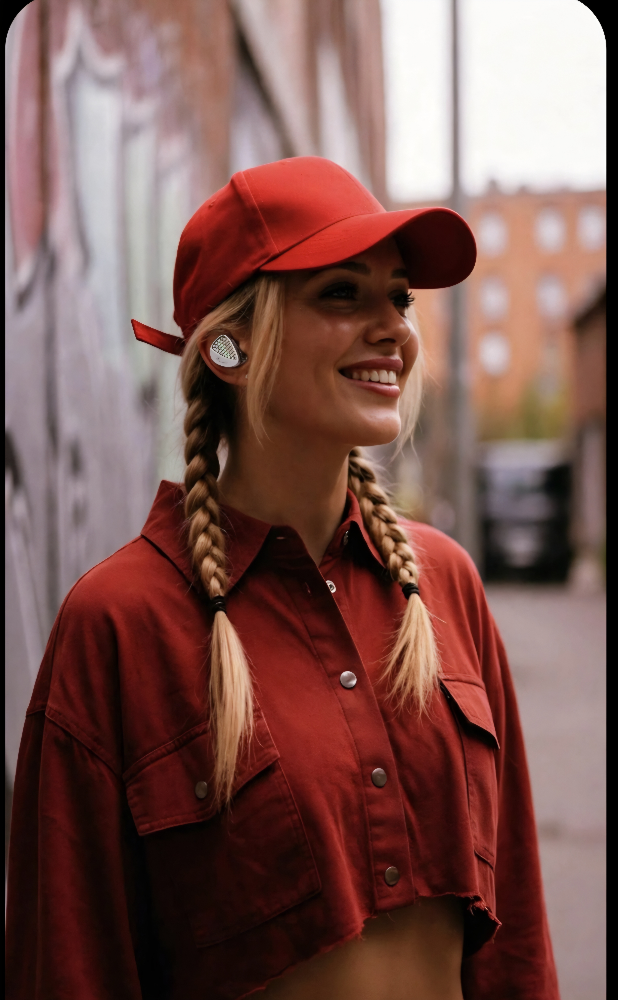
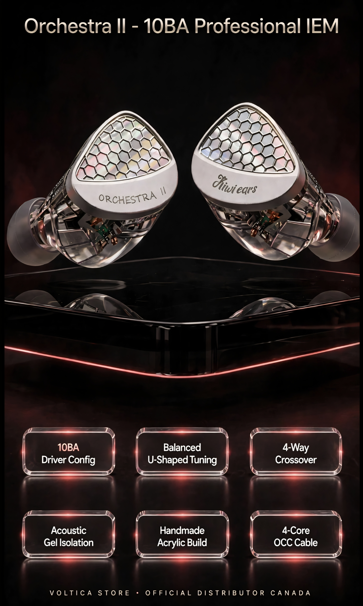
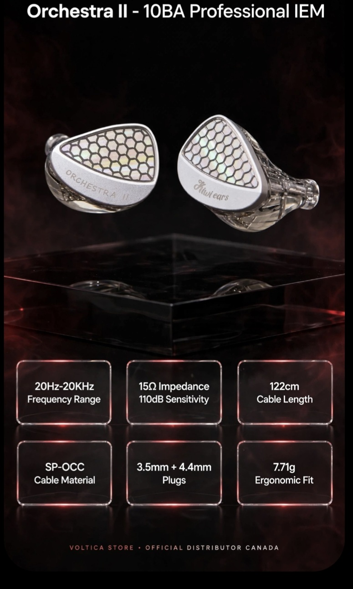

NOUVEAUTÉ
Kiwi Ears Orchestra II - 10BA Professional In-Ear Monitors
349,99 $
Découvrez le Kiwi Ears Orchestra II, le summum de l'ingénierie acoustique de précision. Doté d'une configuration impressionnante de 10 drivers à armature équilibrée (10BA) par écouteur et d'un filtre crossover à 4 voies, ces intra-auriculaires (IEM) offrent une signature en U équilibrée, une clarté de niveau studio et une imaging de référence.